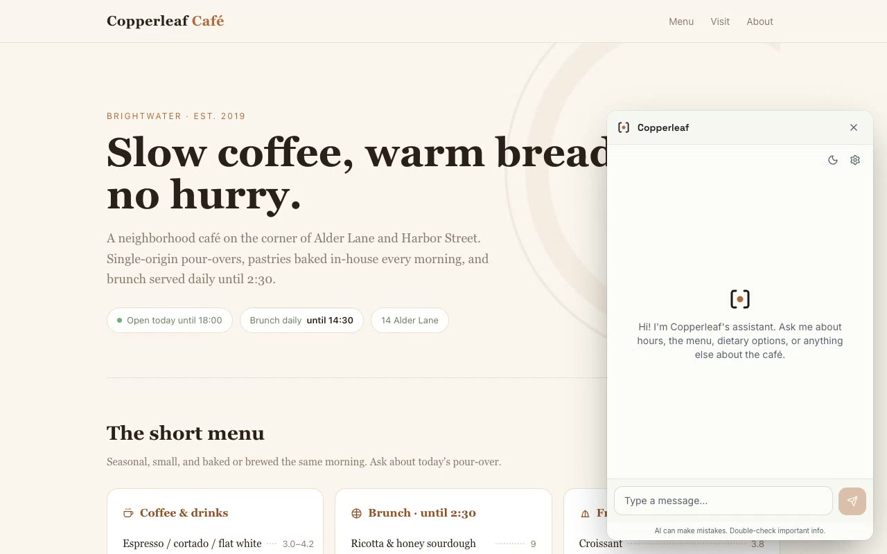

一个 一行脚本标签就能嵌入任意网页的 AI 助手——运行在访客自己的浏览器里，零服务器、零 API 费、零数据上传。
借助 WebGPU + 自研 bitgpu 推理引擎，让小型 LLM 直接寄生在访客的显卡上。

一行 <script> 标签，页面加载时仅拉取 ~3 KB 启动器，模型懒加载，对性能零影响。
数据完全不经过服务器——输入、语音、对话全部在访客本地浏览器执行，无日志、无上传。
首次加载后模型缓存到 OPFS，离线/内网环境下照常运行，无网络依赖。
打字或语音均可唤醒，同一个模型同时处理文字对话和语音交互，支持打断插入。
上传 PDF/Word/文本/Markdown，生成 ~几MB 的 knowledge.bin，检索在浏览器本地运行。
不依赖任何云端 LLM 服务商，访客自己的设备算力 + 本地模型 = 完全去中心化。
首次打开后加载 ~3 KB Shadow DOM 浮动启动器 → 点击时启动 iframe widget → 纯 postMessage 通信。
文本模式仅需 WebGPU；语音模式额外加载 ASR+TTS+VAD 模型（首次 ~1.6 GB，缓存后离线可用）。
语音模式需页面发送 COOP/COEP 跨域隔离头（Vite 开发服务器默认已配置）。
| 角色 | 模型 | 运行时 | 首次下载 |
|---|---|---|---|
| LLM（核心推理） | onnx-community/Bonsai-1.7B-ONNX（q1, 1-bit） |
bitgpu (WebGPU) | ~290 MB |
| 自动语音识别（ASR） | soniqo/Nemotron-3.5-ASR |
onnxruntime-web | ~600 MB |
| 语音合成（TTS） | Supertone/supertonic-3 |
onnxruntime-web | ~800 MB |
| 断句检测 | onnx-community/smart-turn-v3 |
onnxruntime-web WASM | ~20 MB |
| 语音活动检测（VAD） | Silero v5 | onnxruntime-web WASM | ~20 MB |
| RAG 嵌入 | Xenova/bge-small-en-v1.5（q8, 384维） |
onnxruntime-web WASM | ~30 MB |
bitgpu 引擎优势：通用 WebGPU 运行时解量化 1-bit 权重到 fp16 需要 ~3.4 GB VRAM； bitgpu 保持权重打包态（~0.5 GB VRAM）原地解码，VRAM 节省 ~85%，适合普通笔记本显卡。
<!-- 粘贴到 </body> 前，一行搞定 --> <script src="https://cdn.aidekin.com/loader.js" data-title="Acme 助手" data-accent="#58c3ff" data-knowledge-url="./knowledge.bin" defer ></script>
text / voice / bothlight / dark / autotrue / false首次访问下载 ~290 MB（文本），语音模式额外 ~1.6 GB；后续从 OPFS 缓存读取，无需重复下载。 访客每个站点首次下载一次，缓存按站点隔离。